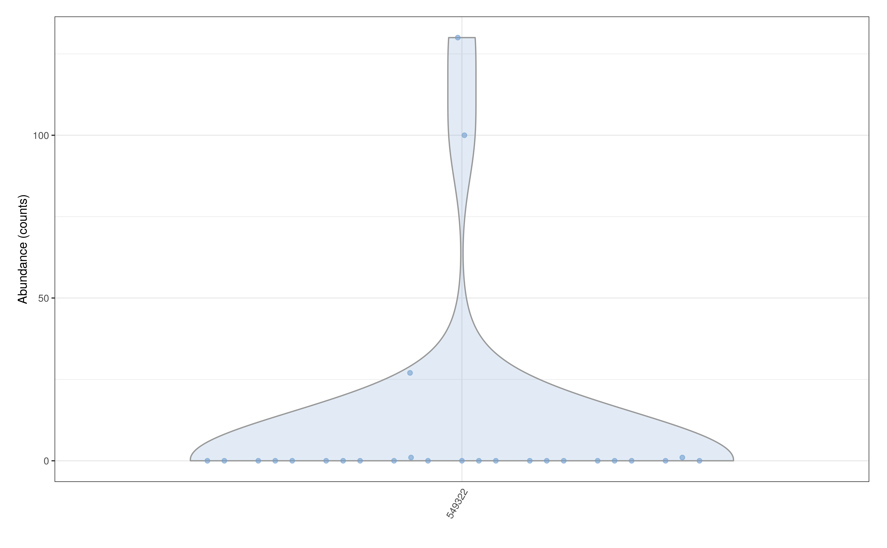
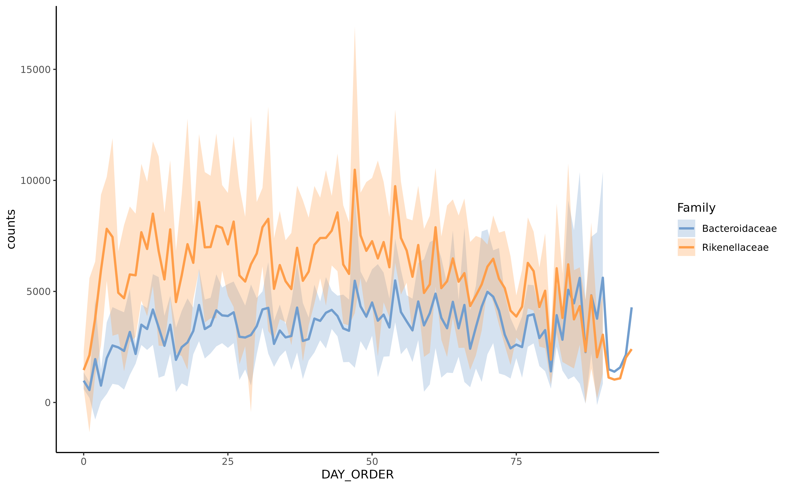
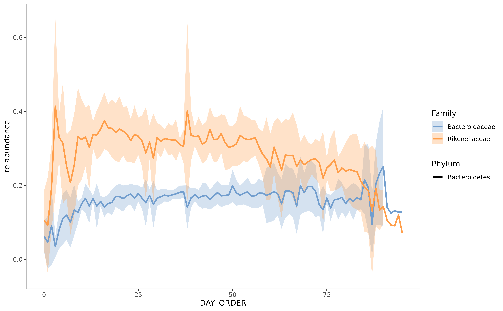
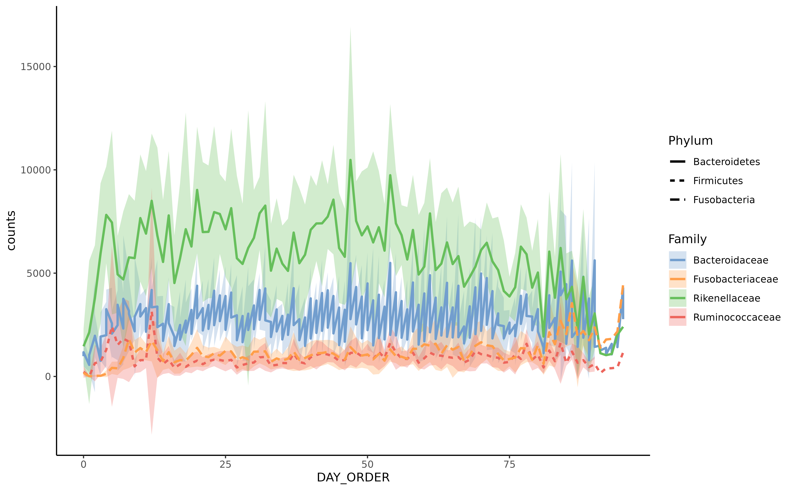

miaViz
miaViz.RmdmiaViz implements plotting function to work with TreeSummarizedExperiment and related objects in a context of microbiome analysis. For more general plotting function on SummarizedExperiment objects the scater package offers several options, such as plotColData, plotExpression and plotRowData.
Installation
To install miaViz, install BiocManager first, if it is not installed. Afterwards use the install function from BiocManager and load miaViz.
if (!requireNamespace("BiocManager", quietly = TRUE))
install.packages("BiocManager")
BiocManager::install("miaViz")
#> Bioconductor version 3.13 (BiocManager 1.30.10), R Under development (unstable)
#> (2021-03-18 r80099)
#> Installing package(s) 'miaViz'
#> Warning: package 'miaViz' is not available for this version of R
#>
#> A version of this package for your version of R might be available elsewhere,
#> see the ideas at
#> https://cran.r-project.org/doc/manuals/r-devel/R-admin.html#Installing-packagesAbundance plotting
in contrast to other fields of sequencing based fields of research for which expression of genes is usually studied, microbiome research uses the more term Abundance to described the numeric data measured and analyzed. Technically, especially in context of SummarizedExperiment objects, there is no difference. Therefore plotExpression can be used to plot Abundance data.
plotAbundance can be used as well and as long as rank is set NULL, it behaves as plotExpression.
plotAbundance(GlobalPatterns, rank = NULL,
features = "549322", abund_values = "counts")
However, if the rank is set not NULL a bar plot is returned. At the same time the features argument can be set to NULL (default).
GlobalPatterns <- transformCounts(GlobalPatterns, method = "relabundance")
plotAbundance(GlobalPatterns, rank = "Kingdom", abund_values = "relabundance")
With subsetting to selected features the plot can be fine tuned.
prev_phylum <- getPrevalentTaxa(GlobalPatterns, rank = "Phylum",
detection = 0.01)
plotAbundance(GlobalPatterns[rowData(GlobalPatterns)$Phylum %in% prev_phylum],
rank = "Phylum",
abund_values = "relabundance")
The features argument is reused for plotting data along the different samples. In the next example the SampleType is plotted along the samples. In this case the result is a list, which can combined using external tools, for example patchwork.
library(patchwork)
plots <- plotAbundance(GlobalPatterns[rowData(GlobalPatterns)$Phylum %in% prev_phylum],
features = "SampleType",
rank = "Phylum",
abund_values = "relabundance")
plots$abundance / plots$SampleType +
plot_layout(heights = c(9, 1))
Prevalence plotting
To visualize prevalence within the dataset, two functions are available, plotTaxaPrevalence, plotPrevalenceAbundance and plotPrevalence.
plotTaxaPrevalence produces a so-called landscape plot, which visualizes the prevalence of samples across abundance thresholds.
plotTaxaPrevalence(GlobalPatterns, rank = "Phylum",
detections = c(0, 0.001, 0.01, 0.1, 0.2))
plotPrevalenceAbundance plot the prevalence depending on the mean relative abundance on the chosen taxonomic level.
plotPrevalentAbundance(GlobalPatterns, rank = "Family",
colour_by = "Phylum") +
scale_x_log10()
plotPrevalence plot the number of samples and their prevalence across different abundance thresholds. Abundance steps can be adjusted using the detections argument, whereas the analyzed prevalence steps is set using the prevalences argument.
plotPrevalence(GlobalPatterns,
rank = "Phylum",
detections = c(0.01, 0.1, 1, 2, 5, 10, 20)/100,
prevalences = seq(0.1, 1, 0.1))
Tree plotting
The information stored in the rowTree can be directly plotted. However, sizes of stored trees have to be kept in mind and plotting of large trees rarely makes sense.
For this example we limit the information plotted to the top 100 taxa as judged by mean abundance on the genus level.
altExp(GlobalPatterns,"Genus") <- agglomerateByRank(GlobalPatterns,"Genus")
altExp(GlobalPatterns,"Genus") <- addPerFeatureQC(altExp(GlobalPatterns,"Genus"))
rowData(altExp(GlobalPatterns,"Genus"))$log_mean <-
log(rowData(altExp(GlobalPatterns,"Genus"))$mean)
rowData(altExp(GlobalPatterns,"Genus"))$detected <-
rowData(altExp(GlobalPatterns,"Genus"))$detected / 100
top_taxa <- getTopTaxa(altExp(GlobalPatterns,"Genus"),
method="mean",
top=100L,
abund_values="counts")Colour, size and shape of tree tips and nodes can be decorated based on data present in the SE object or by providing additional information via the other_fields argument. Note that currently information for nodes have to be provided via the other_fields arguments.
Data will be matched via the node or label argument depending on which was provided. label takes precedent.
plotRowTree(altExp(GlobalPatterns,"Genus")[top_taxa,],
tip_colour_by = "log_mean",
tip_size_by = "detected")
#> Warning in .numeric_ij(ij = i, x = x, dim = "row"): For rows/cols with the same
#> name, only one is output
#> Warning in convertNode(tree = track, node = oldAlias): Multiple nodes are found
#> to have the same label.
#> Warning in convertNode(tree = value, node = nlk$nodeLab[iRep]): Multiple nodes
#> are found to have the same label.
#> Warning: `mutate_()` was deprecated in dplyr 0.7.0.
#> Please use `mutate()` instead.
#> See vignette('programming') for more help
Tree plot using ggtree with tip labels decorated by mean abundance (colour) and prevalence (size)
Tip and node labels can be shown as well. Setting show_label = TRUE shows the tip labels only …
plotRowTree(altExp(GlobalPatterns,"Genus")[top_taxa,],
tip_colour_by = "log_mean",
tip_size_by = "detected",
show_label = TRUE)
#> Warning in .numeric_ij(ij = i, x = x, dim = "row"): For rows/cols with the same
#> name, only one is output
#> Warning in convertNode(tree = track, node = oldAlias): Multiple nodes are found
#> to have the same label.
#> Warning in convertNode(tree = value, node = nlk$nodeLab[iRep]): Multiple nodes
#> are found to have the same label.
Tree plot using ggtree with tip labels decorated by mean abundance (colour) and prevalence (size). Tip labels of the tree are shown as well.
… whereas node labels can be selectively shown by providing a named logical vector to show_label.
Please not that currently ggtree only can plot node labels in a rectangular layout.
labels <- c("Genus:Providencia", "Genus:Morganella", "0.961.60")
plotRowTree(altExp(GlobalPatterns,"Genus")[top_taxa,],
tip_colour_by = "log_mean",
tip_size_by = "detected",
show_label = labels,
layout="rectangular")
#> Warning in .numeric_ij(ij = i, x = x, dim = "row"): For rows/cols with the same
#> name, only one is output
#> Warning in convertNode(tree = track, node = oldAlias): Multiple nodes are found
#> to have the same label.
#> Warning in convertNode(tree = value, node = nlk$nodeLab[iRep]): Multiple nodes
#> are found to have the same label.
Tree plot using ggtree with tip labels decorated by mean abundance (colour) and prevalence (size). Selected node and tip labels are shown.
Information can also be visualized on the edges of the tree plot.
plotRowTree(altExp(GlobalPatterns,"Genus")[top_taxa,],
edge_colour_by = "Phylum",
tip_colour_by = "log_mean")
#> Warning in .numeric_ij(ij = i, x = x, dim = "row"): For rows/cols with the same
#> name, only one is output
#> Warning in convertNode(tree = track, node = oldAlias): Multiple nodes are found
#> to have the same label.
#> Warning in convertNode(tree = value, node = nlk$nodeLab[iRep]): Multiple nodes
#> are found to have the same label.
Tree plot using ggtree with tip labels decorated by mean abundance (colour) and edges labeled Kingdom (colour) and prevalence (size)
Graph plotting
Similar to tree data, graph data can also be plotted in conjunction with SummarizedExperiment objects. Since the graph data in itself cannot be stored in a specialized slot, a graph object can be provided separately or as an element from the metedata.
Here we load an example graph. As graph data, all objects types accepted by as_tbl_graph from the tidygraph package are supported.
data(col_graph)In the following examples, the weight data is automatically generated from the graph data. The SummarizedExperiment provided is required to have overlapping rownames with the node names of the graph. Using this link the graph plot can incorporated data from the SummarizedExperiment.
plotColGraph(col_graph,
altExp(GlobalPatterns,"Genus"),
colour_by = "SampleType",
edge_colour_by = "weight",
edge_width_by = "weight",
show_label = TRUE)
As mentioned the graph data can be provided from the metadata of the SummarizedExperiment.
metadata(altExp(GlobalPatterns,"Genus"))$graph <- col_graphThis produces the same plot as shown above.
Plotting of serial data
library(microbiomeDataSets)
#> Loading required package: MultiAssayExperiment
silverman <- SilvermanAGutData()
#> using temporary cache /tmp/RtmpsrcI0n/BiocFileCache
#> snapshotDate(): 2021-03-18
#> see ?microbiomeDataSets and browseVignettes('microbiomeDataSets') for documentation
#> downloading 1 resources
#> retrieving 1 resource
#> loading from cache
#> see ?microbiomeDataSets and browseVignettes('microbiomeDataSets') for documentation
#> downloading 1 resources
#> retrieving 1 resource
#> loading from cache
#> see ?microbiomeDataSets and browseVignettes('microbiomeDataSets') for documentation
#> downloading 1 resources
#> retrieving 1 resource
#> loading from cache
#> see ?microbiomeDataSets and browseVignettes('microbiomeDataSets') for documentation
#> downloading 1 resources
#> retrieving 1 resource
#> loading from cache
#> see ?microbiomeDataSets and browseVignettes('microbiomeDataSets') for documentation
#> downloading 1 resources
#> retrieving 1 resource
#> loading from cache
silverman <- transformCounts(silverman, method = "relabundance")
taxa <- getTopTaxa(silverman, 2)Data from samples collected along time can be visualized using plotSeries. The x argument is used to reference data from the colData to use as descriptor for ordering the data. The y argument selects the feature to show. Since plotting a lot of features is not advised a maximum of 20 features can plotted at the same time.
plotSeries(silverman,
x = "DAY_ORDER",
y = taxa,
colour_by = "Family") If replicated data is present, data is automatically used for calculation of the mean and sd and plotted as a range. Data from different assays can be used for plotting via the abund_values.
plotSeries(silverman[taxa,],
x = "DAY_ORDER",
colour_by = "Family",
linetype_by = "Phylum",
abund_values = "relabundance")
Additional variables can be used to modify line type aesthetics.
plotSeries(silverman,
x = "DAY_ORDER",
y = getTopTaxa(silverman, 5),
colour_by = "Family",
linetype_by = "Phylum",
abund_values = "counts")
Session info
sessionInfo()
#> R Under development (unstable) (2021-03-18 r80099)
#> Platform: x86_64-pc-linux-gnu (64-bit)
#> Running under: Ubuntu 20.04.2 LTS
#>
#> Matrix products: default
#> BLAS/LAPACK: /usr/lib/x86_64-linux-gnu/openblas-pthread/libopenblasp-r0.3.8.so
#>
#> locale:
#> [1] LC_CTYPE=en_US.UTF-8 LC_NUMERIC=C
#> [3] LC_TIME=en_US.UTF-8 LC_COLLATE=en_US.UTF-8
#> [5] LC_MONETARY=en_US.UTF-8 LC_MESSAGES=C
#> [7] LC_PAPER=en_US.UTF-8 LC_NAME=C
#> [9] LC_ADDRESS=C LC_TELEPHONE=C
#> [11] LC_MEASUREMENT=en_US.UTF-8 LC_IDENTIFICATION=C
#>
#> attached base packages:
#> [1] parallel stats4 stats graphics grDevices utils datasets
#> [8] methods base
#>
#> other attached packages:
#> [1] microbiomeDataSets_0.99.5 MultiAssayExperiment_1.17.20
#> [3] scater_1.19.11 patchwork_1.1.1
#> [5] miaViz_0.99.5 ggraph_2.0.5
#> [7] ggplot2_3.3.3 mia_0.99.4
#> [9] TreeSummarizedExperiment_1.99.11 Biostrings_2.59.2
#> [11] XVector_0.31.1 SingleCellExperiment_1.13.12
#> [13] SummarizedExperiment_1.21.1 Biobase_2.51.0
#> [15] GenomicRanges_1.43.3 GenomeInfoDb_1.27.8
#> [17] IRanges_2.25.6 S4Vectors_0.29.9
#> [19] BiocGenerics_0.37.1 MatrixGenerics_1.3.1
#> [21] matrixStats_0.58.0 BiocStyle_2.19.1
#>
#> loaded via a namespace (and not attached):
#> [1] AnnotationHub_2.23.2 BiocFileCache_1.15.1
#> [3] systemfonts_1.0.1 igraph_1.2.6
#> [5] lazyeval_0.2.2 splines_4.1.0
#> [7] BiocParallel_1.25.5 digest_0.6.27
#> [9] htmltools_0.5.1.1 viridis_0.5.1
#> [11] fansi_0.4.2 magrittr_2.0.1
#> [13] memoise_2.0.0 ScaledMatrix_0.99.2
#> [15] cluster_2.1.1 DECIPHER_2.19.2
#> [17] graphlayouts_0.7.1 pkgdown_1.6.1
#> [19] colorspace_2.0-0 rappdirs_0.3.3
#> [21] blob_1.2.1 ggrepel_0.9.1
#> [23] textshaping_0.3.3 xfun_0.22
#> [25] dplyr_1.0.5 crayon_1.4.1
#> [27] RCurl_1.98-1.3 jsonlite_1.7.2
#> [29] ape_5.4-1 glue_1.4.2
#> [31] polyclip_1.10-0 gtable_0.3.0
#> [33] zlibbioc_1.37.0 DelayedArray_0.17.9
#> [35] BiocSingular_1.7.2 scales_1.1.1
#> [37] DBI_1.1.1 Rcpp_1.0.6
#> [39] xtable_1.8-4 viridisLite_0.3.0
#> [41] tidytree_0.3.3 bit_4.0.4
#> [43] rsvd_1.0.3 httr_1.4.2
#> [45] RColorBrewer_1.1-2 ellipsis_0.3.1
#> [47] pkgconfig_2.0.3 farver_2.1.0
#> [49] scuttle_1.1.18 dbplyr_2.1.0
#> [51] sass_0.3.1 utf8_1.2.1
#> [53] AnnotationDbi_1.53.1 later_1.1.0.1
#> [55] tidyselect_1.1.0 labeling_0.4.2
#> [57] rlang_0.4.10 munsell_0.5.0
#> [59] BiocVersion_3.13.1 tools_4.1.0
#> [61] cachem_1.0.4 DirichletMultinomial_1.33.2
#> [63] generics_0.1.0 RSQLite_2.2.4
#> [65] ExperimentHub_1.17.1 evaluate_0.14
#> [67] stringr_1.4.0 fastmap_1.1.0
#> [69] yaml_2.2.1 ragg_1.1.2
#> [71] ggtree_2.5.1 knitr_1.31
#> [73] bit64_4.0.5 fs_1.5.0
#> [75] tidygraph_1.2.0 purrr_0.3.4
#> [77] KEGGREST_1.31.1 nlme_3.1-152
#> [79] sparseMatrixStats_1.3.6 mime_0.10
#> [81] aplot_0.0.6 debugme_1.1.0
#> [83] compiler_4.1.0 png_0.1-7
#> [85] interactiveDisplayBase_1.29.0 filelock_1.0.2
#> [87] curl_4.3 beeswarm_0.3.1
#> [89] treeio_1.15.6 tibble_3.1.0
#> [91] tweenr_1.0.1 bslib_0.2.4
#> [93] stringi_1.5.3 highr_0.8
#> [95] desc_1.3.0 lattice_0.20-41
#> [97] Matrix_1.3-2 vegan_2.5-7
#> [99] permute_0.9-5 vctrs_0.3.6
#> [101] pillar_1.5.1 lifecycle_1.0.0
#> [103] BiocManager_1.30.10 jquerylib_0.1.3
#> [105] BiocNeighbors_1.9.4 cowplot_1.1.1
#> [107] bitops_1.0-6 irlba_2.3.3
#> [109] httpuv_1.5.5 R6_2.5.0
#> [111] promises_1.2.0.1 bookdown_0.21
#> [113] gridExtra_2.3 vipor_0.4.5
#> [115] MASS_7.3-53.1 assertthat_0.2.1
#> [117] rprojroot_2.0.2 withr_2.4.1
#> [119] GenomeInfoDbData_1.2.4 mgcv_1.8-34
#> [121] grid_4.1.0 beachmat_2.7.7
#> [123] tidyr_1.1.3 rmarkdown_2.7
#> [125] DelayedMatrixStats_1.13.5 rvcheck_0.1.8
#> [127] ggnewscale_0.4.5 ggforce_0.3.3
#> [129] shiny_1.6.0 ggbeeswarm_0.6.0